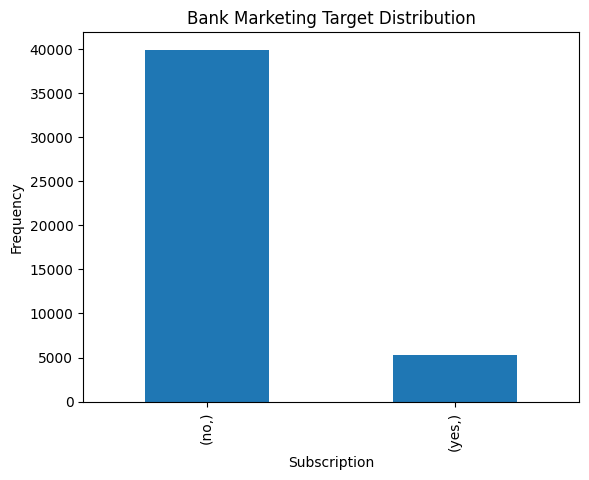
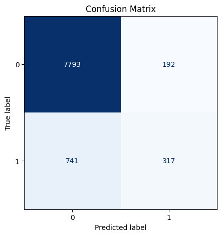
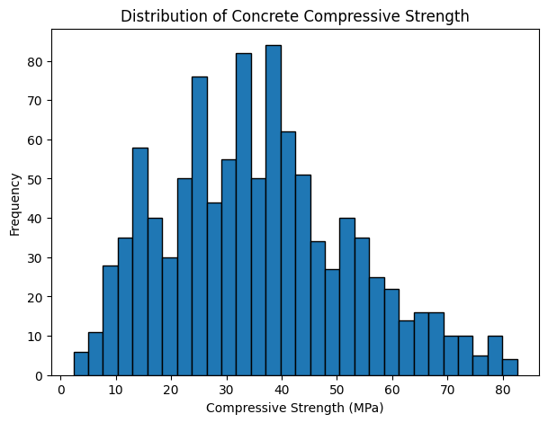
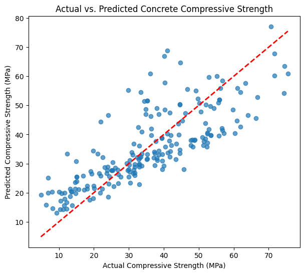
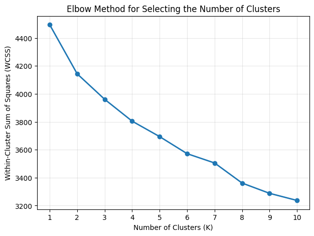
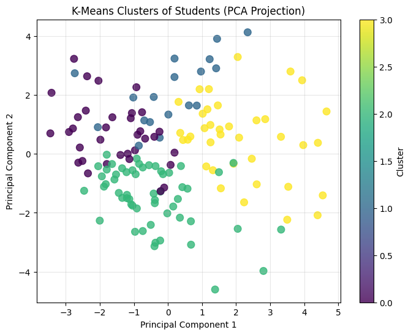

Three real machine learning workflows, coded and run end-to-end in Python: a classification model on live banking data, a regression model predicting concrete strength, and a clustering model uncovering hidden student groups — with the actual metrics and charts my code produced.
A classmate's Workshop 5 feedback pushed me to add more technical, hands-on work to this portfolio, and this artifact is my direct response. For Workshop 2 of AIML-500, I worked through a notebook covering the three core machine learning paradigms — supervised classification, supervised regression, and unsupervised clustering — implementing each one in Python against real public datasets rather than toy examples.
For a technical hiring manager, this is the artifact that answers a question my other four can't: can I actually write the code, train the model, and read the output correctly — not just talk about machine learning in the abstract.
Implement one example each of classification, regression, and clustering using scikit-learn, evaluate each model with the correct metrics for its task, and correctly interpret what those metrics actually mean for the underlying business or research question — not just report a single accuracy number.
I trained a Logistic Regression classifier on the UCI Bank Marketing dataset (45,211 real customer records) to predict term-deposit subscription, a Linear Regression model on the UCI Concrete Compressive Strength dataset (1,030 samples) to predict a continuous engineering measurement, and a K-Means clustering model on the UCI Higher Education Students Performance dataset (145 students, 31 features) to discover natural student groupings with no labels involved at all. Each workflow followed the same discipline: explore the data first, preprocess appropriately for the algorithm, train on a held-out split, and evaluate with metrics suited to the task rather than defaulting to accuracy.
Logistic Regression on the UCI Bank Marketing dataset (45,211 records, 16 features).

| Metric | Score |
|---|---|
| Accuracy | 89.68% |
| Precision (subscribed) | 62% |
| Recall (subscribed) | 30% |
| F1-score (subscribed) | 40% |

The headline 89.68% accuracy looks strong on its own, but the dataset is imbalanced — only about 12% of customers actually subscribed. The confusion matrix tells the real story: the model correctly caught 317 subscribers but missed 741 of them, for a recall of just 30%. A model that mostly predicts "no" will score high on accuracy in this kind of dataset without being especially useful for a marketing team trying to find likely subscribers.
Linear Regression on the UCI Concrete Compressive Strength dataset (1,030 samples, 8 mixture/age features).

| Metric | Value |
|---|---|
| Mean Absolute Error (MAE) | 7.75 MPa |
| Root Mean Squared Error (RMSE) | 9.80 MPa |
| R² (variance explained) | 0.628 |

An R² of 0.628 means the model explains roughly 63% of the variation in concrete strength from mixture composition and age alone — a reasonable baseline, not a finished product. The scatter plot makes the model's limits visible: points cluster near the reference line at lower strength values but spread out more at the high end, suggesting the true relationship isn't fully linear and a more flexible model (like a Random Forest or Gradient Boosting regressor) would likely close that gap.
K-Means clustering on the UCI Higher Education Students Performance dataset (145 students, 31 features).


With no target variable involved, I used the Elbow Method to choose K = 4 clusters, then reduced the 31 original features to two principal components with PCA just to make the groups visible. The model split the 145 students into groups of 34, 18, 56, and 37 based purely on demographic, study-habit, and engagement patterns — without ever seeing their grades. That's the core difference from the first two workflows: the structure came entirely from the data itself, not from a label I was trying to predict.
Challenge: My first read of the classification results was that 89.68% accuracy meant the model was working well — a natural but misleading conclusion given how imbalanced the dataset was.
Solution: Looking at the confusion matrix and the classification report instead of the single accuracy number showed the real gap: the model was missing 7 out of every 10 actual subscribers. That distinction — between a number that looks good and a model that's actually useful for the business question being asked — was the single most useful thing this artifact taught me.
This artifact shows I can implement, not just describe, the three foundational machine learning paradigms — and that I know which evaluation metric actually matters for each type of problem, rather than reaching for accuracy by default.
Covering all three paradigms side by side, on three different real datasets, makes the contrast between them concrete rather than theoretical: classification needed precision/recall because of class imbalance, regression needed error magnitude metrics because there's no "correct class," and clustering needed neither, because there was nothing to predict in the first place.
Nearly every AI/ML role eventually requires choosing the right paradigm for a given business problem and evaluating a model honestly rather than by whichever number looks best. This artifact is direct evidence I can do that, not just explain it in an interview.
Accuracy lies on imbalanced data. The classification workflow was the clearest example in my coursework so far of why a single metric can be actively misleading without the right context.
Unsupervised learning requires a different kind of judgment. Without a label to check against, evaluating the clustering result meant relying on the Elbow Method and visual inspection rather than a clean right-or-wrong answer — a genuinely different skill from the other two workflows.
This artifact was added specifically in response to Workshop 5 peer feedback requesting more technical work in the portfolio. As a new artifact, no prior revisions apply.